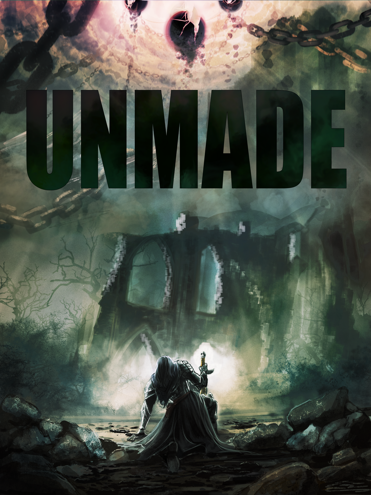

About Me
Game Developer • Unity • C#
Who I Am
I’m Charroo van Megen, a 21-year-old Game Developer student at Mediacollege Amsterdam. I’m especially interested in gameplay design: the way a player moves, interacts with the world, and learns a game’s systems. For me, good gameplay should feel intuitive and responsive, while still giving players interesting things to discover and master.
I like to study how mechanics work in games I play, then use what I learn when building my own prototypes. I try to understand a problem and find a solution independently, while staying open to feedback and other perspectives.
Skills & Projects
I work primarily with Unity and C#. Across team and personal projects, I’ve explored gameplay programming, player interactions, movement, audio, and reward systems. Projects such as a horror game and a vertical slice inspired by Untitled Goose Game have given me opportunities to turn ideas into playable experiences.
Working with others has helped me develop my communication and teamwork skills. I’m familiar with Scrum, value constructive feedback, and aim to explain my ideas clearly. I’m also interested in learning more about C++ and Unreal Engine.
Outside of Development
Outside of game development, I enjoy gaming, sports, reading fantasy and mythology, and creative writing. Writing gives me a chance to explore characters, worlds, and story ideas in more depth; reading and playing games inspire me with new approaches to atmosphere and storytelling. Sports also help me practise consistency and discipline.

Unmade
My progression fantasy story follows a character facing memory loss and supernatural trials while searching for their identity.
Read Unmade →What I’m Working Toward
I want to keep growing as a developer by improving my knowledge of Unity, C#, and gameplay systems. In the long term, my goal is to create my own dream game: one with thoughtful mechanics and an experience that stays with its players.